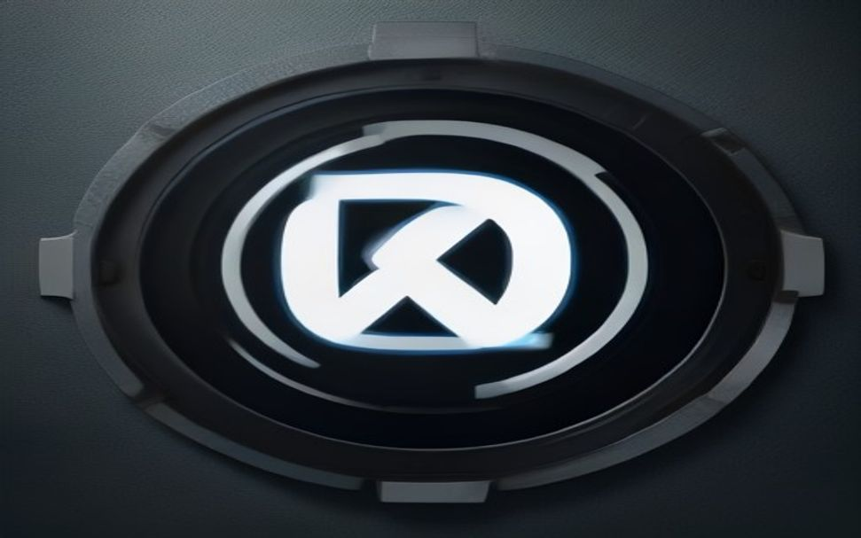

هنوز ویدیوهایی که با Veo میسازی شبیه انیمیشنهای بیکیفیت و مصنوعی درمیان؟ 🎬
گوگل با معرفی این هوش مصنوعی بازی رو عوض کرد، اما گرفتن خروجی سینمایی قلق داره:
۱. زاویه دقیق دوربین: بجای واژه کلی سینمایی، نوع شات مثل tracking shot یا low-angle رو بنویس.
۲. نورپردازی حجمی: استفاده از volumetric lighting یا golden hour ویدیو رو واقعگرایانه میکنه. ⚡
۳. توصیف فیزیک محیط: رفتارهای طبیعی مثل wind effect یا liquid splash رو حتماً ذکر کن.
۴. تنظیم ریتم حرکت: با کلمات slow-motion یا dynamic panning جلوی بهمریختگی فریم رو بگیر.
۵. جزئیات بافت: عباراتی مثل detailed skin texture کیفیت خروجی رو جهش میدن.
نکته طلایی: **همیشه اول حرکت دوربین را بنویسید و بعد سوژه را توصیف کنید** تا پردازش تصویر کادر خراب نشود. 💡
🚀 عضویت در کانال تلگرام